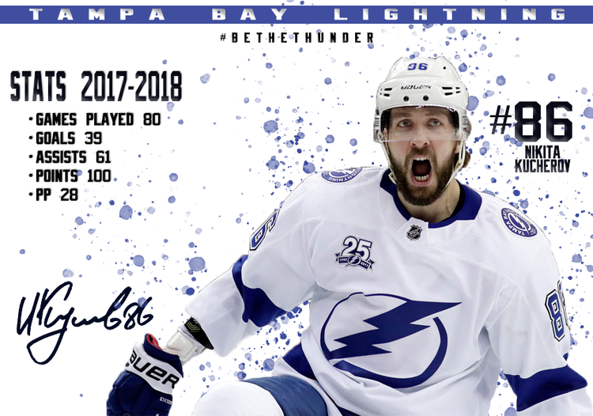

These are my business cards that I designed using Adobe Photoshop and a little bit of InDesign as well. I created the logo and used a picture of orlando as the background.
These are my business cards that I designed using Adobe Photoshop and a little bit of InDesign as well. I created the logo and used a picture of orlando as the background.


These two pictures were a lot of fun to make, in my free time I like to edit photos. The first one is a picture of the fountain at UCF with a couple of filters on them. The next is a picture of the orlando skyline with a couple of edits and the Orlando city logo in the background.

I love sports. So a lot of my work reflects that. The first picture is a flyer I made for the Orlando City soccer team for their home opener this year. The other photo is a statsheet for my favorite hockey player Nikita Kucherov. Both were made using Illustrator and Photoshop